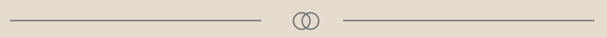

05.02.01 VIRKSOMHEDSSITE
Beskrivelse af opgaven
Denne opgave er lavet i Tema 5. I denne opgave skulle vi som gruppe redesigne en selvvalgt virksomheds website. Redesignet skulle ende ud i et kodet website og indeholde indholdsproduktion, i form af tekst, foto og video.
Min opgave var at lave moodboard, styletile, lave storyboard, klippe video, kode forside og indsamle data fra lighthouse test, eksperttest og BERT-test.
Hvad jeg lærte

I tema 5 arbejdede vi med redesign af website ud fra eget wireframe, layoutdiagram, styletile og sitemap. Vi arbejdede desuden med eksperttest (heuristisk test), 5 sekunders test og BERT test. Desuden arbejdede jeg med storyboard, klippeteori og filmens grundelementer som frame, scene og sekvens.
I vores gruppearbejde arbejdede vi med projektstyringen SCRUM, hvor vi især arbejdede med rollefordeling og sprint backlog. Desuden arbejdede vi også med gitHub og netlify.
Processen

I denne opgave arbejdede vi især med, metoden SCRUM (sprint backlog).
Vi tog udgangspunkt i virksomheden BrolæggerTeamet Aps, og undersøgte ved hjælp af research metoder som desk research og interview, hvordan deres hjemmeside så ud på daværende tidspunkt, og hvordan de godt kunne tænke sig den så ud, ud fra deres behov.
Ud fra vores research begyndte vi at lave moodboard, styletile og wireframe. Herefter blev der lavet en prototype, som vi kunne kode ud fra.
Da hjemmesiden var kodet, begyndte jeg at lave storyboard til hvad der skulle filmes, og da videomaterialet var eksporteret klippede jeg det sammen til en montage i Premiere Pro, og lagde musik henover fra Epidemic Sound.